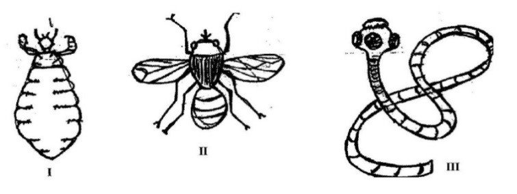

2015 BECE Science Past Questions – Paper Two
Study the diagrams carefully and answer the questions that follow

(i) Identify each of the organisms labelled I, II and III
(ii) Which of the organisms is/are:
(α) parasite(s)
(β) pest(s)
(iii) State one effect each of the following organism on farm animals
(α) I;
(β) II;
(γ) III.
(iv) State three methods of controlling the organism labelled III
(b) The diagram below illustrates a burning candle placed in front of a plane mirror MM’ and an image of the candle formed in the mirror.
Study the diagram
carefully and answer the questions that follow
(i) Name the parts labelled I, II, III and IV
(ii) State the relationship between angles θ1 and θ2
(iii) Give three characteristics of IV in the diagram
(iv) Explain why IV is represented in broken lines
(c) In an experiment to investigate the reactivity of sodium, a piece of sodium metal was dropped in a beaker containing water. The experimental set-up is as illustrated below.
Study the set-up carefully and answer the questions that follow

(i) State what would happen if a glowing splint was held at the mouth of the beaker
(ii) Name the gas evolved
(iii) Write a balanced chemical equation for the reaction that occurred
(iv) Name two other metals that can react in a similar ways as the sodium
(d) An experiment to investigate the conditions for germination of viable bean seeds was carried out. The diagrams below are illustrations of the different conditions in which the seeds were kept. The beakers labelled A, B and C containing the seeds were kept at room temperature.
Study the diagrams carefully and answer the questions that follow
(i) State what would happen to the seeds in each of the beakers labelled A, B and C when the experiment was observed after five days. [3 marks]
(ii) Give reasons for each of your answers in (i)
(iii) Why was oil spread on the surface of the water in the beaker labelled C?
(a) (i) What is weather?
(ii) State two differences between weather and season
(b) State the composition of each of the following alloys;
(i) steel;
(ii) stainless steel
(c) List four benefits of vegetables to humans
(d) The diagram below is an illustration of life-cycle of a flowering plant.
Name each of the stages labelled I, II, III and IV
(a) Explain how
(i) lithium atom becomes positively charged
(ii) oxygen atom becomes negatively charged
(b) (i) What is potential energy?
(ii) A coconut of mass 2 kg is on a tree 5 m tall. Determine the potential energy of the coconut at this height [Take g = 10 ms–2]
(c) State four causes of teenage pregnancy
(d) State four uses of soil in agriculture.
(a) Give four health benefits of water to humans
(b) (i) State two ways in which crop rotation is important in crop production
(ii) Distinguish between mixed cropping and mixed farming
(c) (i) What is a fuse?
(ii) Name the colour code of the wire on which a fuse is placed in a three-pin plug
(d) (i) In a tabular form, state three differences between osmosis and diffusion
(ii) State one way in which osmosis is similar to diffusion
(a) (i) What is a balanced ration in animal nutrition?
(ii) State two benefits of balanced ration to poultry
(b) List four hazards that may be encountered in teaching and learning of science
(c) Name the parts of the circulatory system of humans
(d) (i) What is a simple machine?
(ii) State two methods of overcoming friction in everyday activities
(a) (i) What is a magnetic field?
(ii) To which class of mixture does each of the following belong?
(α) Smoke
(β) Air
(γ) Bronze
(b) (i) What is plaque in human dentition?
(ii) State the function of chlorophyll in photosynthesis
(c) Identify the scientific principle underlying the operation of each of the following industries
(i) kenkey production
(ii) salt smoking
(iii) fish smoking
(iv) biogas production
(d) (i) What is plant parasite?
(ii) Give one example of a plant parasite